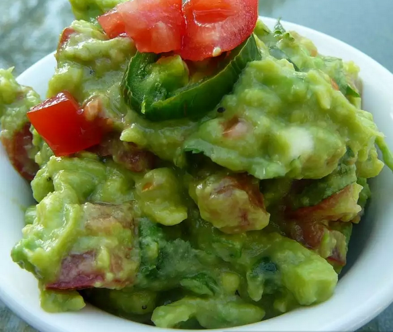

How To Make Guacamole
Description
It's a tortilla chip's BFF, but guacamole was originally created in the 16th century as a sauce rather than a dip. Let's raise a toast to the Aztecs for coming up with this simple dish that has become a party essential.
The best thing about this red hot green stuff? It's so versatile. It can be a munch-able masterpiece whether it's a simple, super easy recipe or something fancy with a long list of ingredients. It can be mild or fiery hot.
Ingredients
- 2 tablespoons minced fresh serrano chili
- ½ cup chopped fresh cilantro, divided
- teaspoon kosher salt for grinding vegetables, plus more to taste
- 4 large Hass avocados
- 1 cup diced ripe tomatoes, drained (Optional)
- 1 lime, juiced, or more to taste
Steps
- Place minced peppers, 1/4 cup of the chopped cilantro, and the diced onions on a cutting board. Chop them together into very small pieces. Sprinkle with kosher salt. Using the flat side of the knife blade, smear the mixture to work it into a paste, and chop again to achieve as fine a texture as possible.
- Stem, halve, and pit the avocados. Scoop out flesh and place in a bowl.
- Add 1/4 cup chopped cilantro, onion and serrano mixture, salt, and fresh lime juice. Mash with a potato masher to desired texture (smooth or chunky), five or six minutes.
- Taste and adjust seasonings. If not serving immediately, cover and refrigerate.